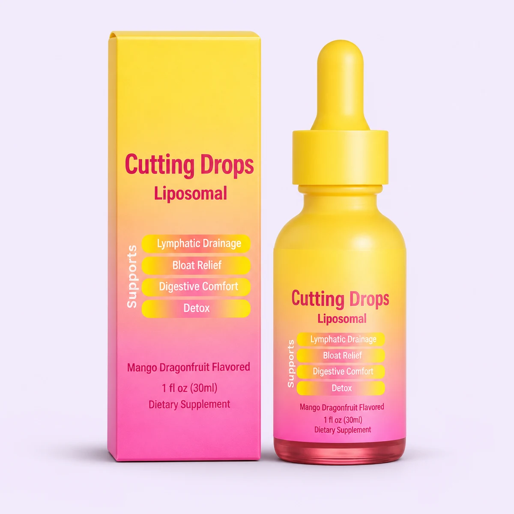
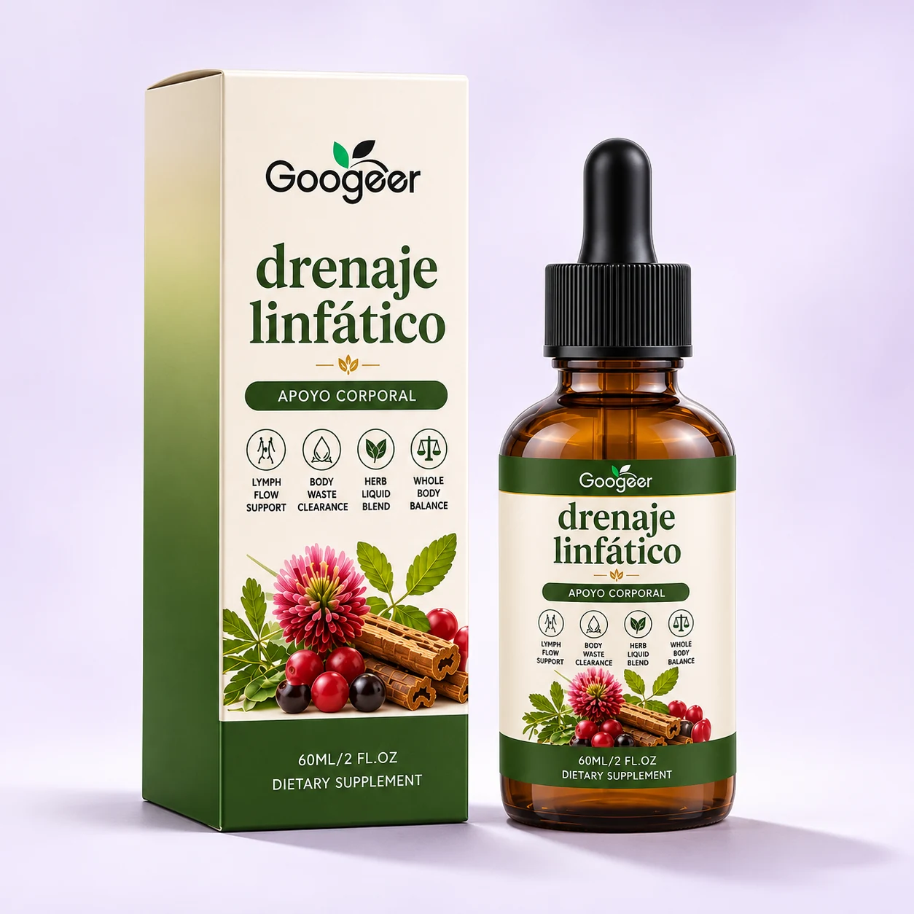
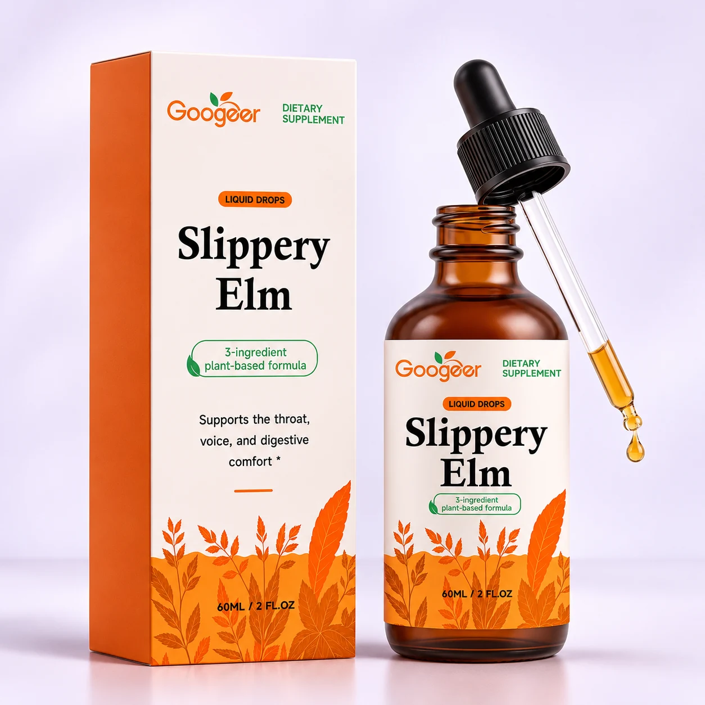
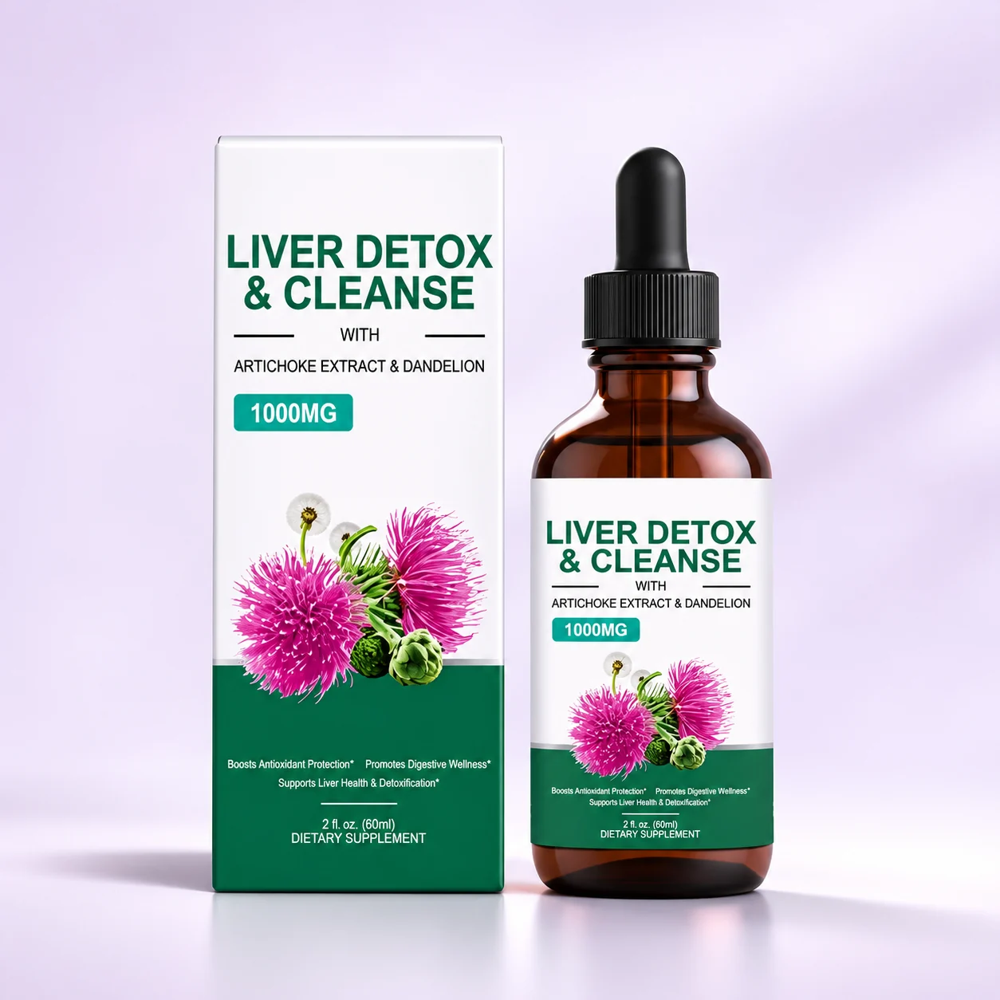
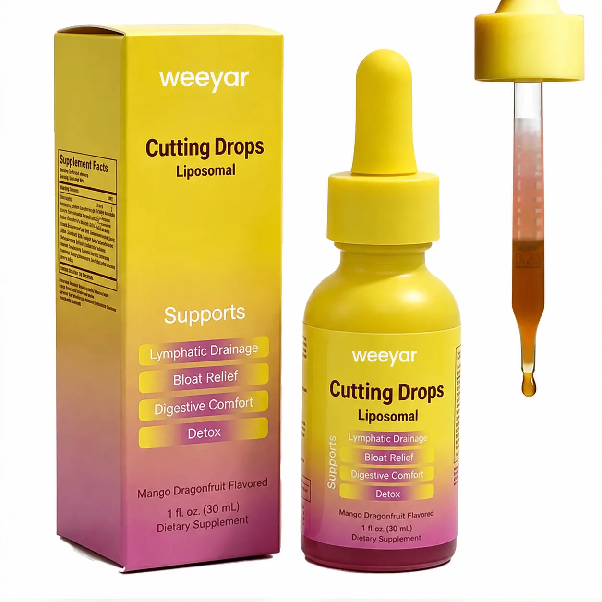
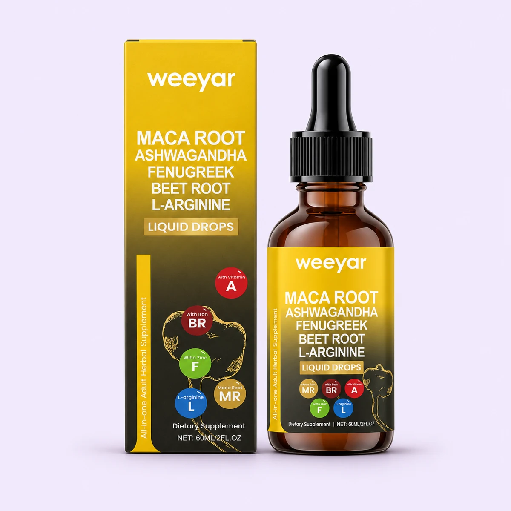
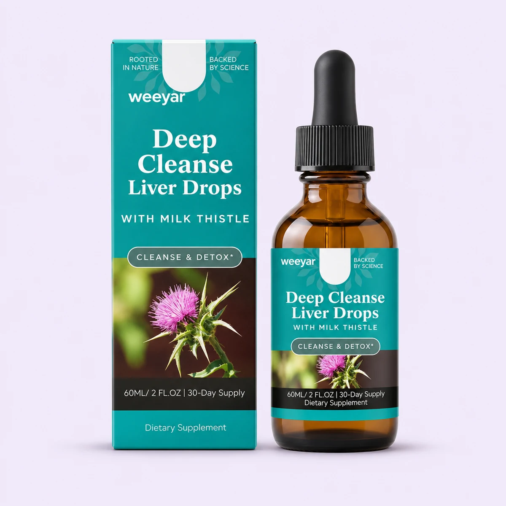
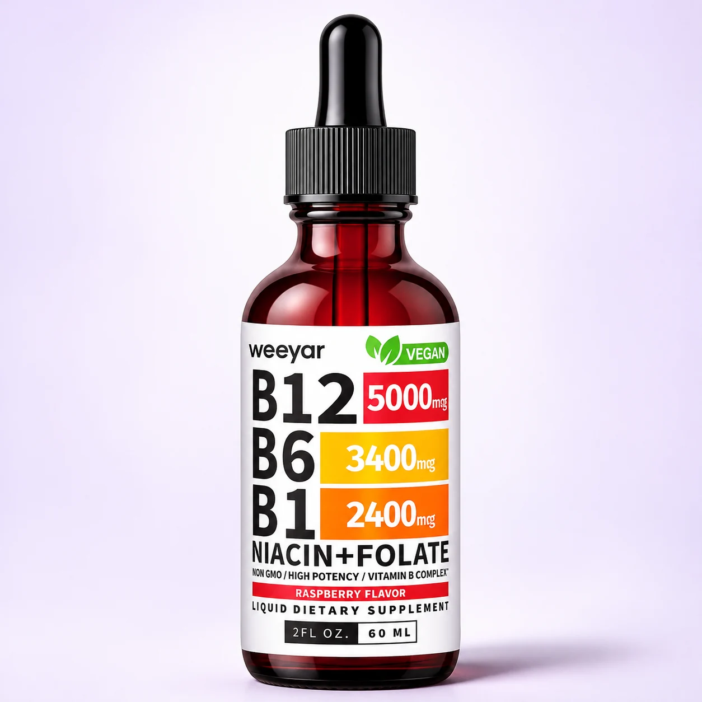
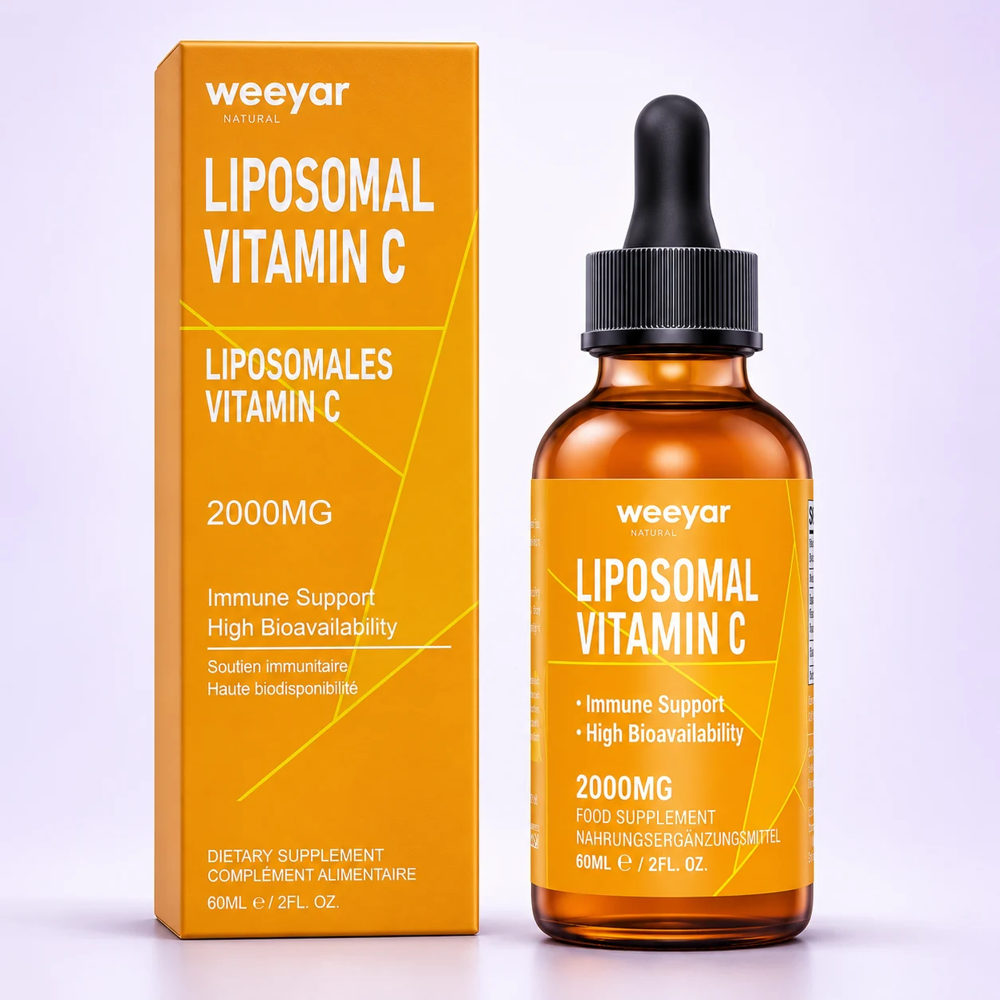

Liquid Drops
Pumpkin Seed Oil Liquid Drops
30 ml dropper bottle with carton. 100 g unit gross weight. Wholesale and private-label options.
View Details →Get a Product Quote →Explore portable dropper formats with options for labels, cartons, flavor direction and formula selection. Project details depend on the selected route and destination market.
30 ml dropper bottle with carton. 100 g unit gross weight. Wholesale and private-label options.
View Details →Get a Product Quote →
60 ml dropper bottle with carton. 150 g unit gross weight. Wholesale and private-label options.
View Details →Get a Product Quote →
30 ml dropper bottle with carton. 85 g unit gross weight. Wholesale and private-label options.
View Details →Get a Product Quote →
Compact 30 ml lemon-flavored liquid-drop concept for project evaluation.
View Details →Get a Product Quote →
Botanical-drop reference with English and Spanish packaging directions.
View Details →Get a Product Quote →
Slippery-elm liquid concept for throat, voice and digestive-comfort ranges.
View Details →Get a Product Quote →
60 ml botanical liquid featuring artichoke, dandelion and milk thistle.
View Details →Get a Product Quote →
Trending 30 ml mango dragonfruit liquid-drop format for private-label wellness lines.
View Details →Get a Product Quote →
Herbal liquid drop format featuring maca and complementary botanicals.
View Details →Get a Product Quote →
Botanical liquid drop format designed for daily wellness ranges.
View Details →Get a Product Quote →
60 ml raspberry-flavored liquid B-complex format for private-label projects.
View Details →Get a Product Quote →
60 ml liposomal vitamin C liquid-drop format for B2B supplement projects.
View Details →Get a Product Quote →Tell us the target market, formula or reference product, packaging and estimated quantity.
Compare quotations using the same formula, bottle volume, quantity and destination. A unit price alone does not show the full project cost.
Confirm the ingredient specification, serving declaration, fill volume and number of bottles. Bottled ready-stock mixed orders start at 20 bottles total, at least 3 per product, in existing-brand packaging; current stock is confirmed separately.
Bottle-label customization starts at 500 bottles. Review label artwork, bottle and dropper compatibility, seals and optional cartons. Custom formulas, new containers and other packaging have separately confirmed minimums and costs.
Request sample quantity, fees and freight separately. Include your destination country and postal code so shipping can be quoted for the selected packing configuration.